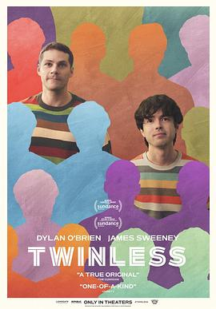

7.9
无双
Twinless
2025
美国
评分 7.9
导演:
詹姆斯·斯维尼
演员:
迪伦·奥布莱恩 / 詹姆斯·斯维尼 / 艾斯琳·弗兰乔茜 / 劳伦·格拉汉姆 / 阿基拉·詹塔拉塔纳农 / 科迪·哈佛 / 塔莎·史密斯
类型:
剧情,喜剧
剧情简介
在一个为“失去双胞胎”的人设立的互助小组中，罗曼（迪伦·奥布莱恩 饰）与丹尼斯（詹姆斯·斯维尼 饰）初次相遇。一个外向冲动、一个理智克制，他们的相识如同两颗受伤的星体在彼此的引力下重新燃起光亮。影片以温柔的幽默与细腻的笔触描绘两位青年在失去另一半后如何在孤独中找到新的连接。罗曼总是用玩笑掩饰悲伤，他在小组上讲述“幻肢般的情感错觉”时惹人发笑，却在夜深人静时盯着镜子中的自己发呆。丹尼斯则是个社交笨拙的作家，语言犀利却不敢直视情感。两人在互助会之外开始频繁见面——他们一起在废弃的游乐场散步、互相阅读日记、甚至编造一个“虚构的双胞胎”作为心灵支撑。导演詹姆斯·斯维尼延续他在《直男之间》中的温和叙事风格，用轻盈的对白探讨深刻的情感议题。影片中每一次笑声都带着一丝酸涩，每一个沉默都藏着温度。摄影采用暖色调与自然光，营造出一种介于现实与记忆之间的柔和质感。故事的转折来自玛西（艾斯琳·弗兰乔茜 饰）的出现——一个充满活力的同事，她闯入了丹尼斯和罗曼之间的微妙平衡。嫉妒、依恋与情感认同交织成一张难以理清的网。当两人终于在一场暴雨中摊开心声，观众也见证了他们从“失去”到“重新完整”的过程。《无双》并非传统意义上的爱情片，而是一部关于身份、依附与疗愈的成长喜剧。它让人看到，人与人之间的羁绊并不需要被定义，只需被真诚感受。迪伦·奥布莱恩与詹姆斯·斯维尼的化学反应自然真挚，令人心生暖意。影片以一句低语收尾——“也许我们都不是谁的另一半，我们只是彼此的补全。”